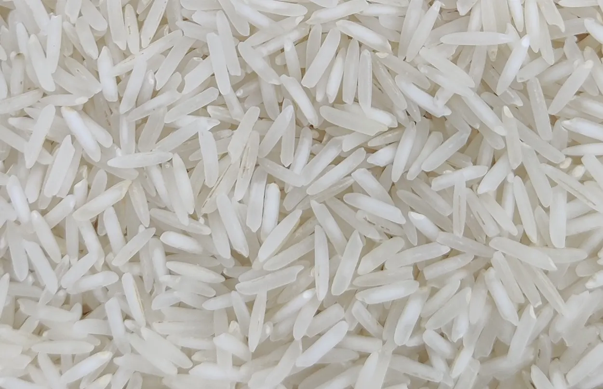
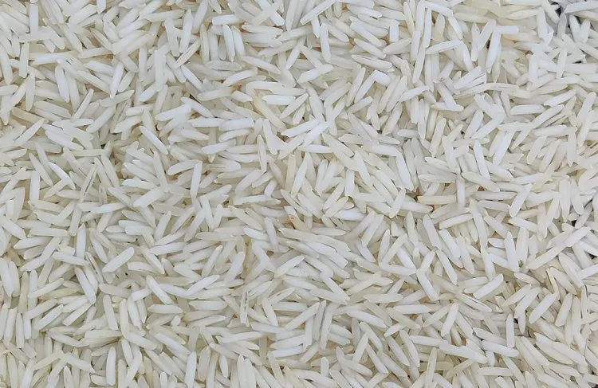
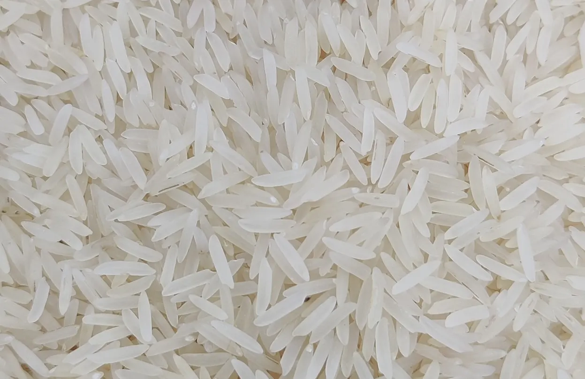
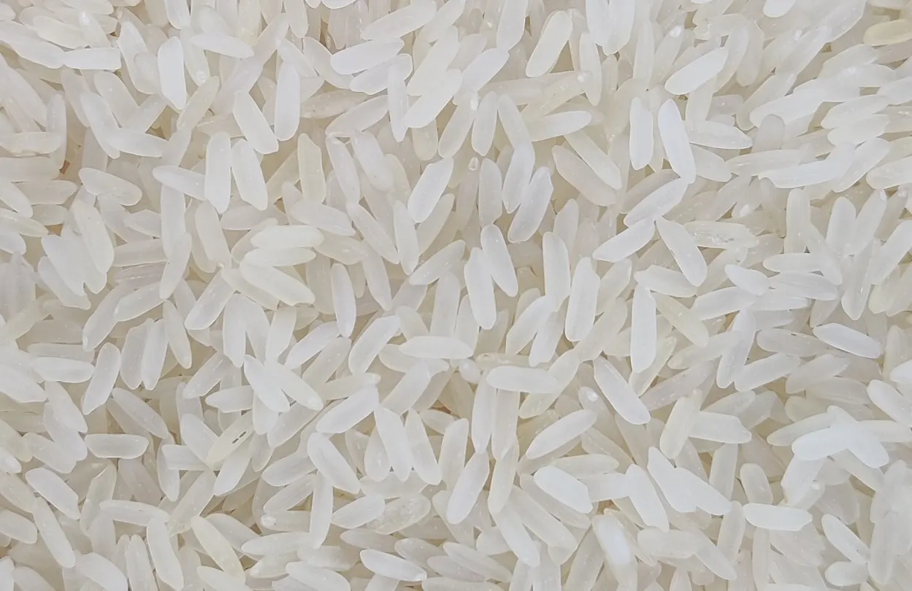
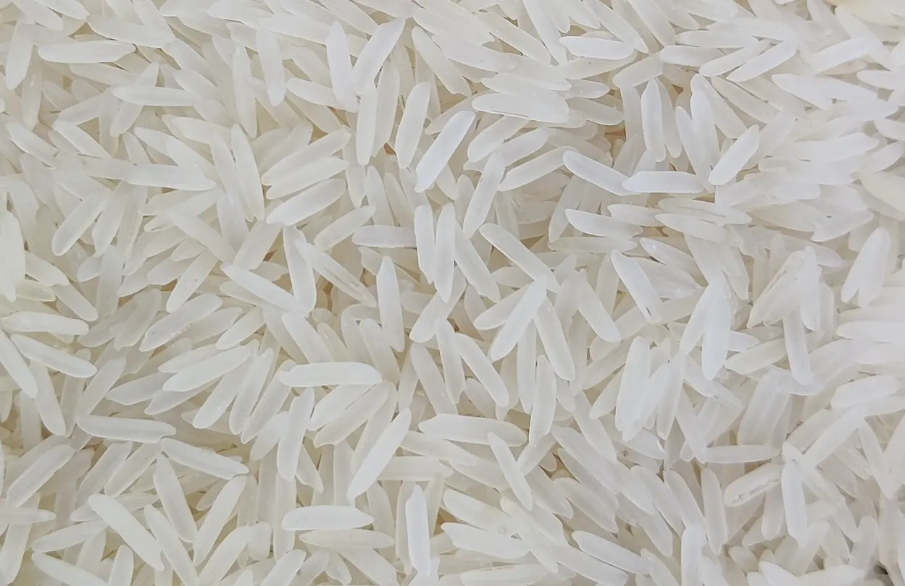
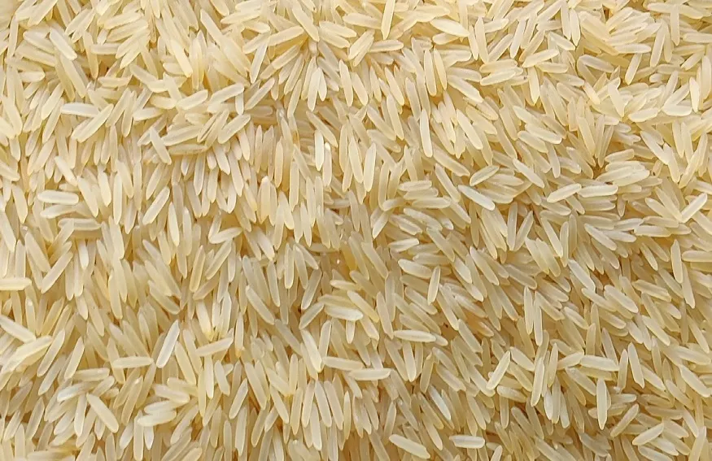
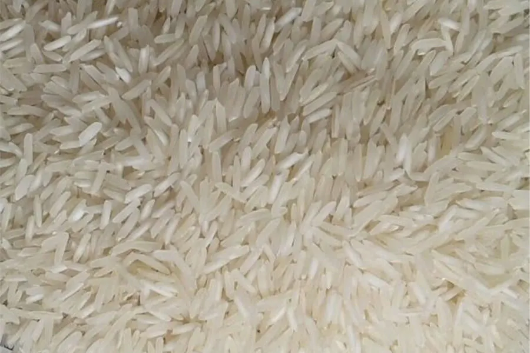
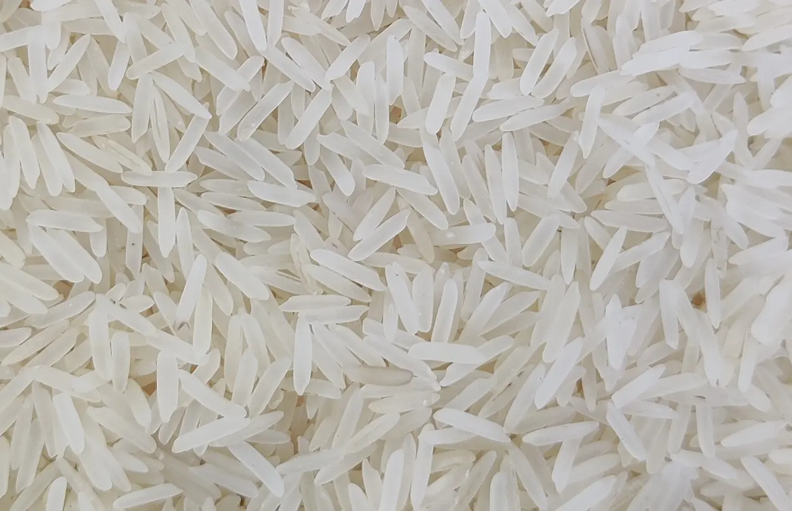
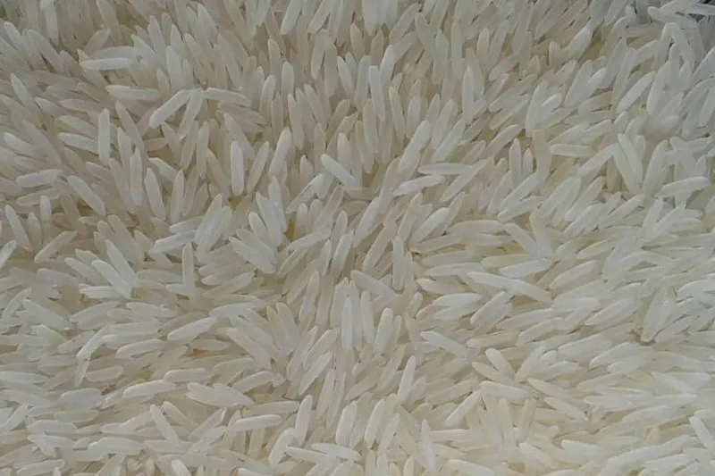

Extra-long grain basmati
1121 Basmati Rice
A widely traded extra-long grain basmati variety for wholesale, food service, retail brands and export requirements.
View rice optionsExplore the rice ranges and processing options we offer from our Village Daha Madanpur mill, then request a quote for your exact requirement.
Basmati rice
Six basmati ranges with Raw, Steam, Sella and Golden Sella processing options from our Karnal mill.
A widely traded extra-long grain basmati variety for wholesale, food service, retail brands and export requirements.
View rice options
A familiar basmati choice for commercial buying programmes that need multiple processing and packaging options.
View rice options
Classic basmati positioning for buyers who value a traditional product story, aroma and established market recognition.
View rice options
A numbered basmati option for buyers comparing grain presentation, processing style, pack and commercial position.
View rice options
An established basmati range offered across the processing styles commonly requested in Indian and export trade.
View rice options
A modern basmati selection for buyers comparing long-grain presentation, processing options and commercial fit.
View rice optionsNon-basmati rice
Five commercial rice ranges for wholesale, food-service, institutional and export enquiries.

A long-grain non-basmati option for buyers balancing presentation, processing choice and commercial value.
View rice options
A value-led non-basmati rice range used in wholesale, food-service and price-conscious packaged-rice programmes.
View rice options
A practical trade rice range for wholesale, institutional and food-service requirements where consistency and value matter.
View rice options
An everyday commercial rice option for high-volume wholesale, food-service and institutional procurement.
View rice options
A lightweight, medium-grain rice associated with South Indian cooking and valued for its soft cooked texture and versatility.
View rice optionsResidue-controlled rice
Four processing categories for buyers who define residue limits and review current testing.

Raw rice enquiries for markets that require defined pesticide-residue limits and buyer-reviewed laboratory evidence.
View rice options
Steam rice sourcing for buyers whose destination market or internal programme specifies pesticide-residue controls.
View rice options
Sella or parboiled rice for programmes where the buyer defines residue limits and reviews current test documentation.
View rice options
Golden Sella rice sourcing for markets that need defined residue controls alongside a buyer-approved product specification.
View rice optionsSend the variety, process, quantity, packaging and destination for a mill-ready quotation.